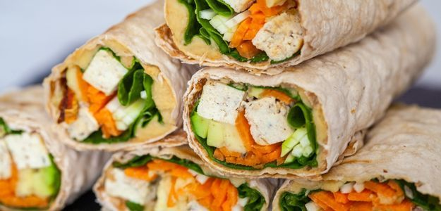

My Favorite Food

Sushi
I love sushi because it’s fresh, artistic, and has many different flavors. Each piece is like a tiny piece of art.

Wraps
I like it because the variety you can create specilay the include chicken.

Pasta
I somthing that you can have for lunch or dinner that allways i can share with my family.